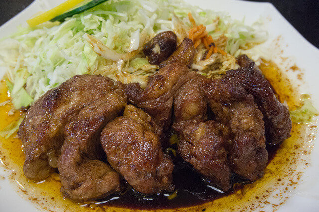

INGREDIENTS
HOW TO PREPARE
PHOTOS
NUTRITION FACTS

Ingredients
Thick Pork Chop 230g
Shredded Cabbage 100g
Dark, rich thick sauce(3 Tbsp ponzu, 3Tbsp sake, 1/2 Tbsp soy sauce)
1 Tbsp All Purpose Flour (aka Plain Flour)
Black Pepper and Salt both 1/8 Tbsp(Optional)
Garlic
Serve with
Click to choose a Supermarket
Buy Ingredients
Instructions
Prepare ingredients, 1 small bowl and 1 medium bowl
Gather all the ingredients
Over a small bowl, 1/4 onion (use about half of it) and set aside
Shred the cabbage into thin slice
In medium bowl, combine ponzu, sake , soy sauce and whisk all together for the sauce
In order to sear the perfectly, pat dry the pork chop with paper towels. Removing the moisture will prevent the meat from being steamed
Make pork being Glove-cut
Colt the meat with flour and remove excess flour
Put the lid on and fry for 3 minutes on a medium heat
After 3 minutes, turn down the heat and flip the pork chops over. Continue to cook for 3 minutes, agin with the lid on
Transfer pork to a plate
In the same pan, add the ingredients of sauce
Put them on the same plate
Drizzle the sauce from the pan
Bon Appetit
Pork is mostly up of protein. It contains nine essential amino acids necessary for your body's growth and maintenance.
Tonteki provides energy (Kcal): 1500
Energy (Kj): 568
Protein (g): 15
Total carbohydrates (g): 201
Total fat (g): 21
Saturated fats (g): 21
Total dietary fiber (g): 1